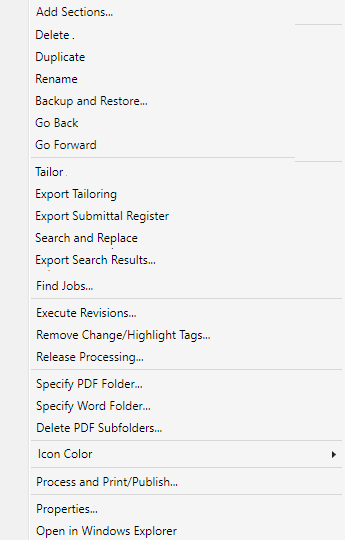
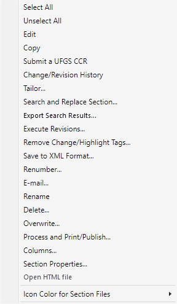

The SpecsIntact Explorer's Right-click menus provide quick access to commonly used commands. To use this feature, right-click within either the Available Projects panel or the Contents panel and select the relevant command.
Right-click Menus
 Click the commands on the images below to see how to use each function.
Click the commands on the images below to see how to use each function.
Available Projects Panel |
Contents Panel |
|
 |
 |